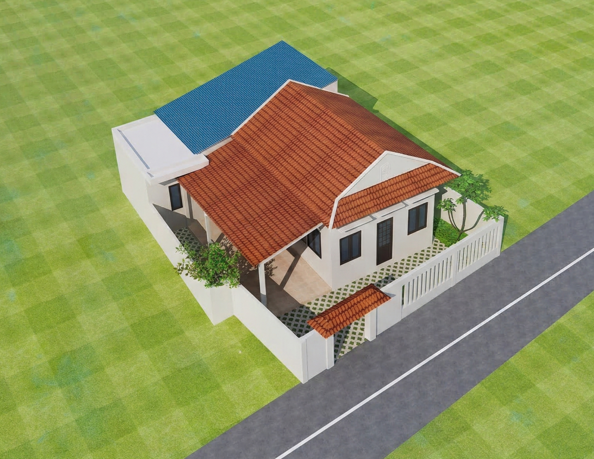
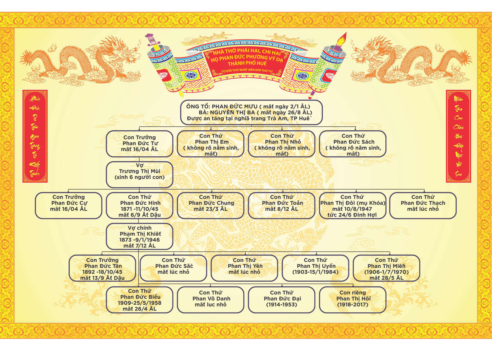
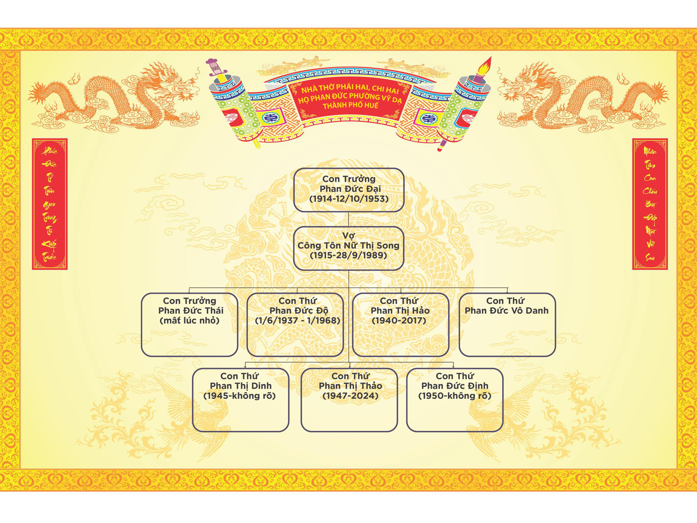
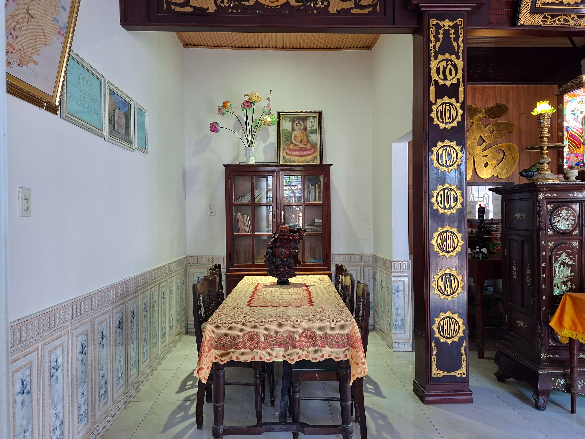
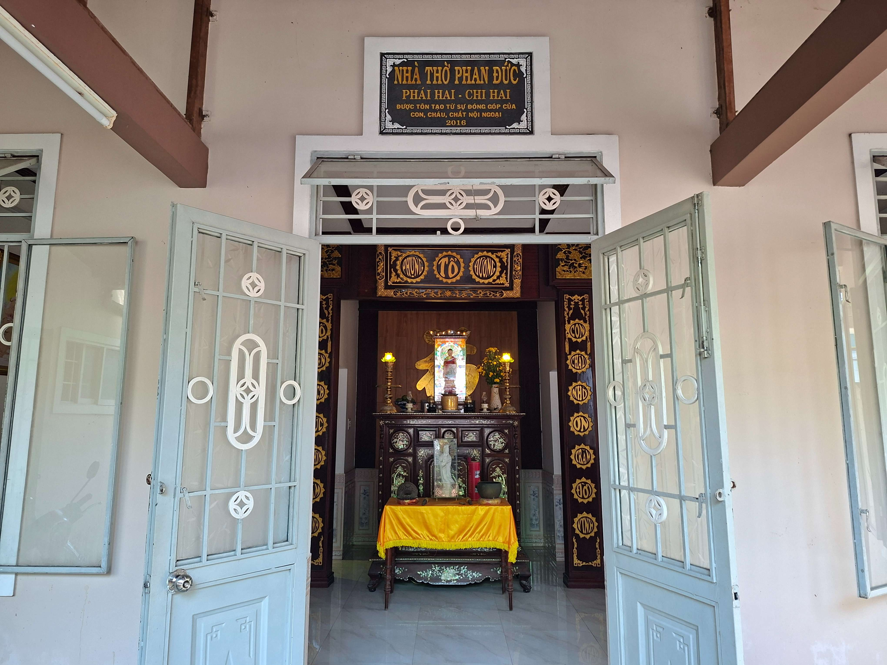
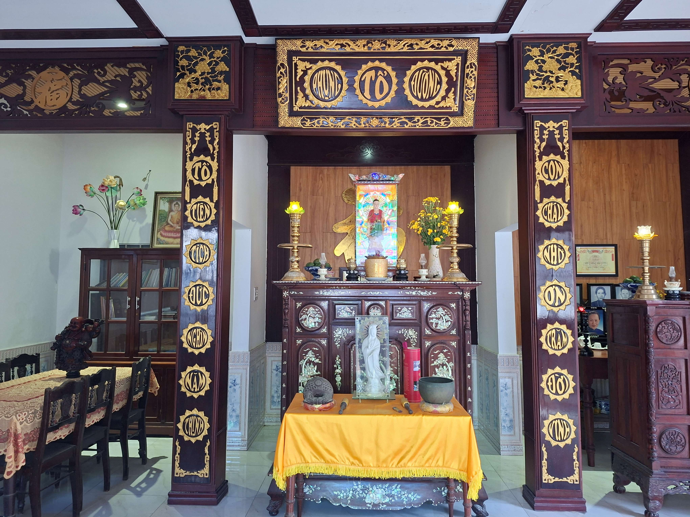
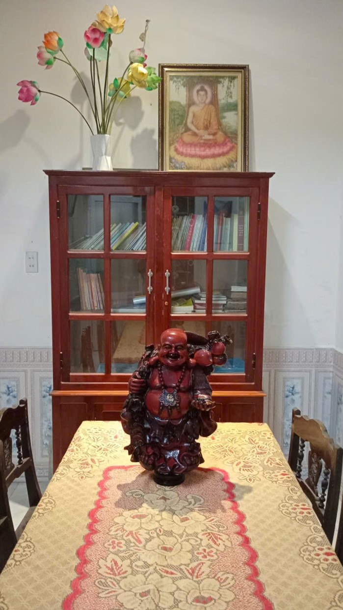
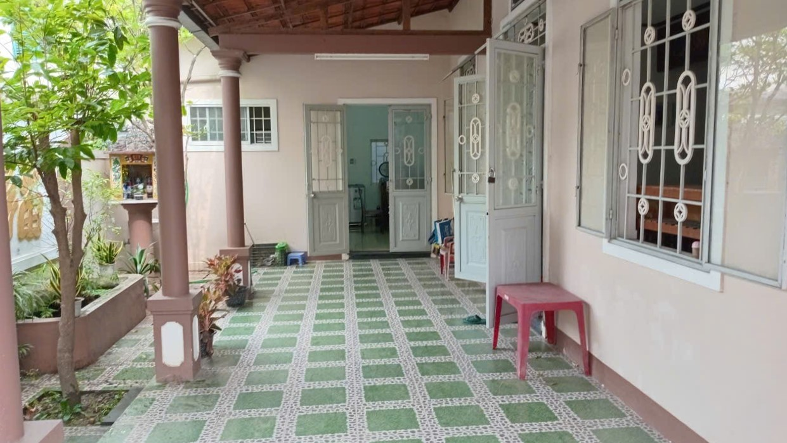
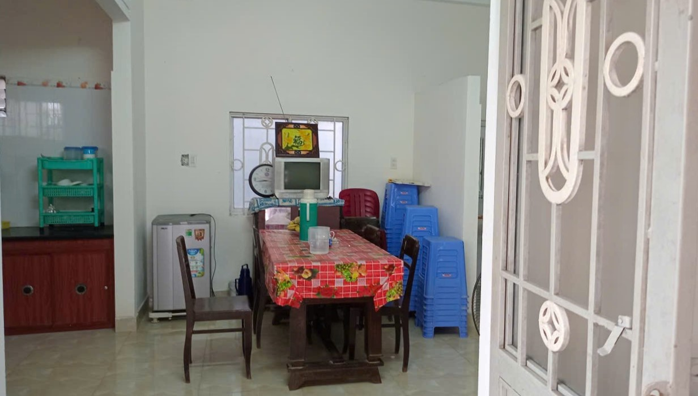
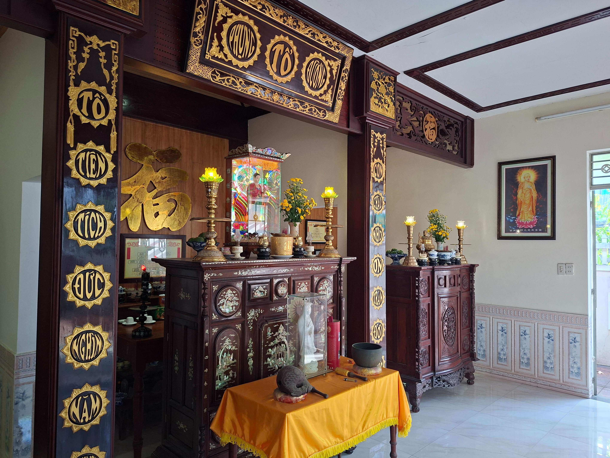

NHÀ THỜ 157 NGUYỄN SINH CUNG (HUẾ)

Phối cảnh của Nhà thờ 157 Nguyễn Sinh Cung
Nhà thờ phái hai, chi hai trước đây tọa lạc trên mảnh đất của Ông cố Phan Đức Hinh tiếp nhận từ các đời trước và được duy trì làm nơi thờ phượng. Từ trước năm 1975 đến năm 2016, nhà thờ do gia đình ông Phan Đức Đại quản lý và sau đó giao cho con là bà Phan Thị Hảo quản lý phụng thờ cho đến khi bà qua đời vào năm 2017. Nhà thờ hiện tại được xây dựng và tôn tạo trên nền đất cũ, khởi công vào ngày 16/1 Âm lịch năm Bính Thân (tức ngày 20/02/2016) và hoàn thành vào ngày 15/4 Âm lịch cùng năm.
Tổng kinh phí đầu tư xây dựng là 447.300.000 đồng (không kể phần mua sắm trang thiết bị như tủ, bàn, ghế...) được các con, cháu, chắt, chít của phái hai, chi hai cùng chung tay đóng góp.
CHI TIẾT
I. Nơi thờ phụng chính (Sau bàn Phật): Thờ ông bà cao tổ, ông bà cao, và các ông cố theo hệ thống gia phả của phái hai, chi hai sau khi đã được tách nhánh. Toàn bộ thông tin được thể hiện chi tiết tại bảng gia phả đặt tại nhà thờ.

II. Nơi thờ phụng bên trái: Bàn hương phía trước thờ các ông bà. Phía bàn sau dùng làm nơi thờ của gia đình ông Phan Đức Đại, vợ và các con theo di nguyện của bà Phan Thị Hảo (thông tin được đưa vào bảng gia phả hiện nay tại bàn thờ).

III. Khu vực bên phải: Được sử dụng để đặt tủ kinh và làm không gian bàn tiếp khách trang trọng.

HÌNH ẢNH NHÀ THỜ HUẾ





